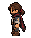
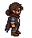
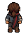
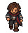
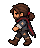
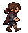
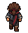

ATLAS — rascunhos normalizados 40 × 48 px · pivô (20,46) · baixo, esquerda, direita, cima.
Não aprovados para substituir a animação do jogo. Conferir apoios, passagem dos pés, estabilidade e fechamento. As poses laterais ainda precisam de redesenho.
idle_down normal · tamanho nativo normal · 4× nearest lento · tamanho nativo lento · 4× nearest Quadros lado a lado
idle_left 
normal · tamanho nativo normal · 4× nearest lento · tamanho nativo lento · 4× nearest Quadros lado a lado
idle_right 
normal · tamanho nativo normal · 4× nearest lento · tamanho nativo lento · 4× nearest Quadros lado a lado
idle_up 
normal · tamanho nativo normal · 4× nearest lento · tamanho nativo lento · 4× nearest Quadros lado a lado
walk_down 
normal · tamanho nativo normal · 4× nearest lento · tamanho nativo lento · 4× nearest Quadros lado a lado
walk_left 
normal · tamanho nativo normal · 4× nearest lento · tamanho nativo lento · 4× nearest Quadros lado a lado
walk_right 
normal · tamanho nativo normal · 4× nearest lento · tamanho nativo lento · 4× nearest Quadros lado a lado
walk_up 
normal · tamanho nativo normal · 4× nearest lento · tamanho nativo lento · 4× nearest Quadros lado a lado